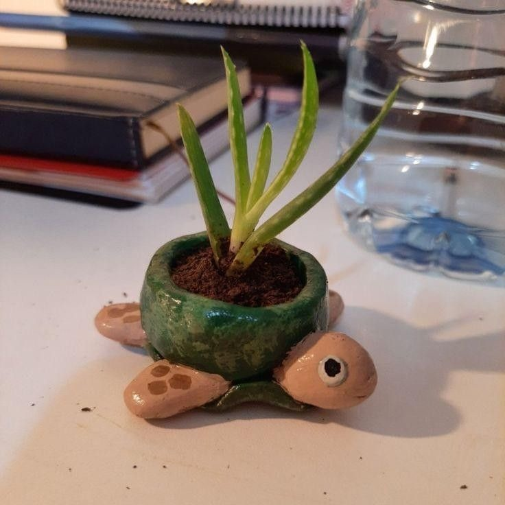
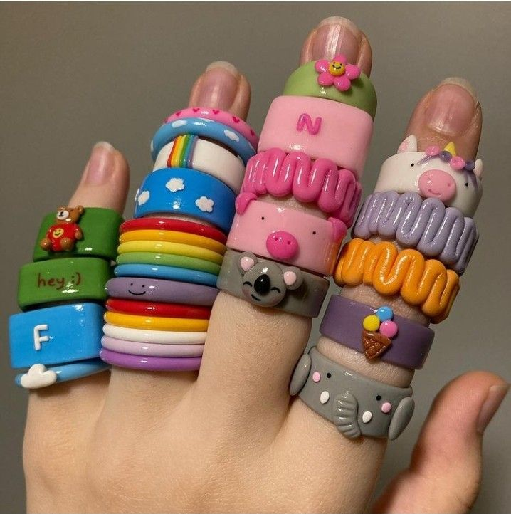

🧸 Kilden Mini Heykel (Hayvan Figürü)

Malzemeler:
• Hava ile kuruyan kil (air-dry clay)
• Küçük kesici ve şekillendirici aletler (kaşık, kürdan, modelleme aletleri)
• Akrilik boya ve fırça
• Vernik (isteğe bağlı)
Aşamalar:
1- Kilin yumuşak olana kadar yoğur.
2- Hayvanın gövdesini basit bir şekil olarak oluştur (örneğin yuvarlak veya oval).
3- Kulak, kuyruk, burun gibi küçük parçalar yap ve ana gövdeye dikkatlice yapıştır.
4- Kürdan veya ince aletlerle göz, tüy, ağız gibi detaylar ekle.
5- Heykelini temiz bir alanda 24 saat kurumaya bırak.
6- Kuruduktan sonra akrilik boya ile istediğin renkleri uygula.
7- İstersen son olarak vernikle koruma ve parlaklık sağla.
🪴 Kilden Mini Saksı Yapımı

Malzemeler:
• Polimer kil veya hava ile kuruyan kil
• Kesici alet
• Akrilik boya
• Vernik (isteğe bağlı)
Aşamalar:
1- Kili yumuşatıp yoğur.
2- Küçük bir top yap ve avuç içinde hafifçe açarak kase şekline getir.
3- Kenarlarını düzelt, kalınlığın eşit olsun.
4- Saksının altına küçük bir yuvarlak kil parçası yapıştırarak sağlam taban oluştur.
5- Hava ile kuruyan kilse 24 saat kurumaya bırak; polimer kilse fırına ver.
6- Kuruduktan sonra saksıyı dilediğin gibi boyayabilirsin.
7- İstersen su geçirmezlik ve parlaklık için vernik uygula.
8- Küçük sukulent veya yapay çiçek yerleştir.
💍 Kil ile Yüzük Yapımı

Malzemeler:
• Polimer kil (istediğin renkte)
• Yüzük boşu (metal ya da plastik, kil üzerine yapıştırmak için)
• Küçük kesici bıçak veya modelleme aleti
• Kürdan veya iğne (küçük detaylar ve delik açmak için)
• Fırın (polimer kil için)
• Akrilik boya (isteğe bağlı)
• Vernik (parlaklık ve dayanıklılık için, isteğe bağlı)
• Güçlü yapıştırıcı veya sıcak silikon tabancası
• İnce zımpara kağıdı (pürüzleri düzeltmek için, isteğe bağlı)
Aşamalar:
1- Polimer kilini iyice yoğur ve yumuşak hale getir.
2- Yüzük için küçük bir figür veya düz bir plaka yapabilirsin (örneğin çiçek, geometrik şekil, minyatür heykelcik vb.). Kalınlığı 0.3–0.5 cm arası uygun olur.
3- Kürdan veya modelleme aletiyle yüzüğüne desenler, kabartmalar ekleyebilirsin.
4- Polimer kil paketindeki pişirme talimatlarına göre fırınla (genellikle 110-130°C arası, 15-30 dakika).
5- Piştikten sonra pürüzlü veya keskin yerleri ince zımpara kağıdı ile düzelt.
6- İstersen akrilik boya ile yüzüğü süsle.
7- Boya kuruduktan sonra vernikle koruma sağla.
8- Kil parçasını güçlü yapıştırıcı veya sıcak silikon tabancası ile yüzük boşunun üst kısmına yapıştır.
9- Yapıştırıcının tamamen kurumasını bekle.